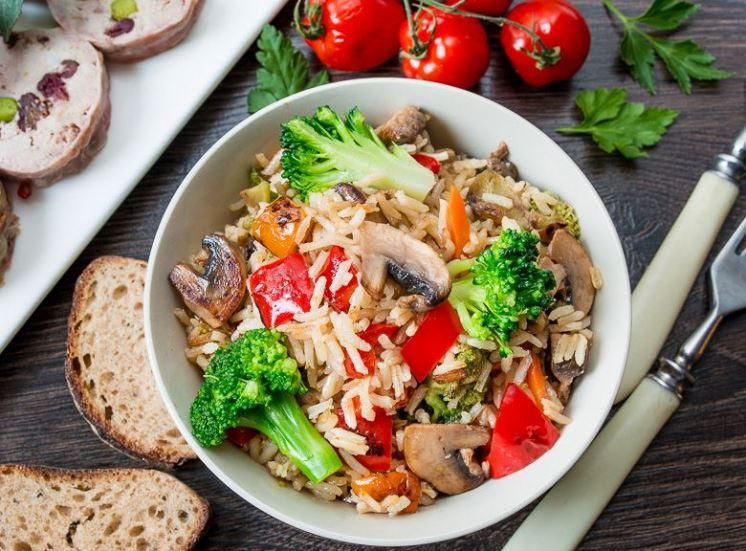
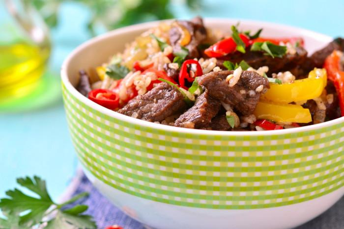
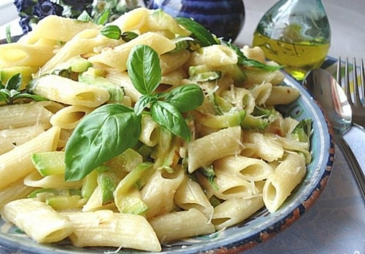

Перший рецепт
Промити рис, залити холодною водою, довести до кипіння під кришкою, далі вогонь зменшити і варити вже до готовності, хвилин 15-20. Час варіння залежить від сорту рису.
Після того як рис звариться (вода повністю випарується), залишити його ще постояти хвилин 10-15, а вже потім додати солі, шматочок вершкового масла й перемішати. У процесі ж варіння рис перемішувати в жодному разі не треба.
Обсмажити моркву з цибулею, додати заморожені овочі, смажити ще 3-5 хвилин. Додати часник, приправити спеціями, викласти в чашу помідори і томат-пасту. Влити туди воду так, щоб овочі були покриті нею наполовину, тушкувати 5 хвилин.
Поверх овочів рівним шаром викласти рис, влити окріп, щоб вода його покрила на 1,5 см, підсолити, ввімкнути режим «Рис» або «Гречка», готувати до звукового сигналу.
Після звукового сигналу приладу про готовність все перемішати, подати рис з овочами до столу.
Другий рецепт
Відварюємо макарони.
Доки вони готуються, розігріваємо велику сковорідку. Протягом 10 хв обсмажуємо на ній нарізані тонкою соломкою кабачки, помідор і часник. Підсолюємо і перчимо, а тоді – додаємо макарони. Смажимо ще 5 хв.
